It's 20 pixels wide. Tap where you think it is. Then see how long it took a computer to do the same.
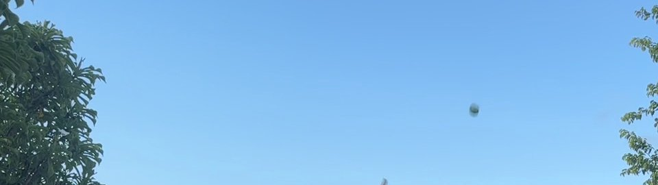
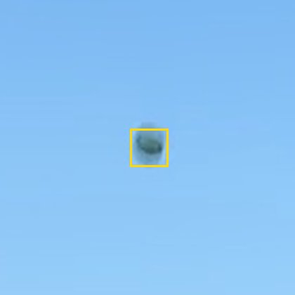
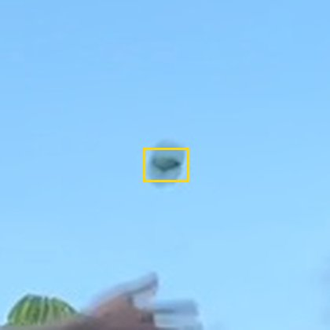
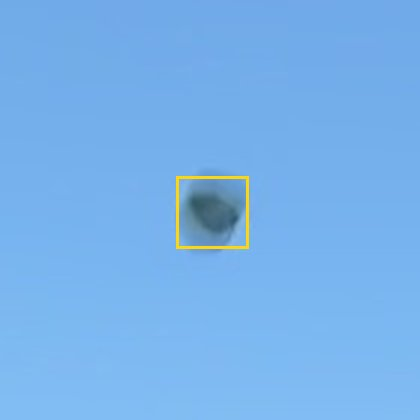
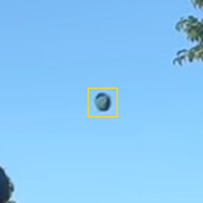
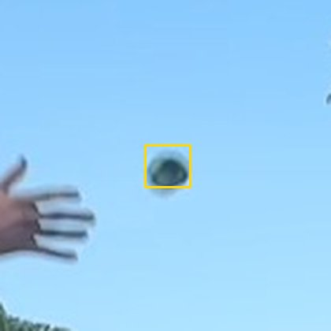
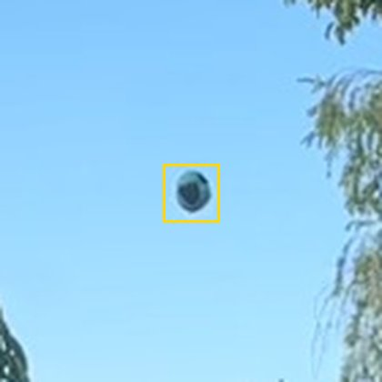
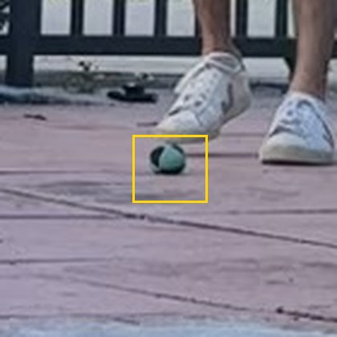
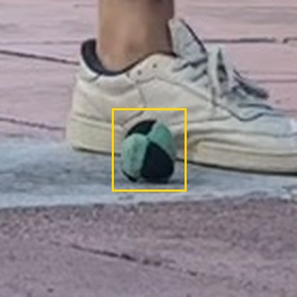
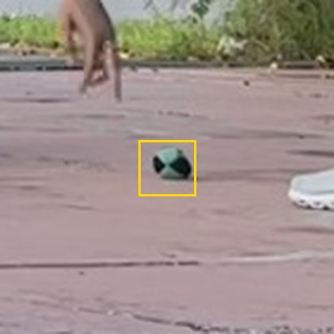
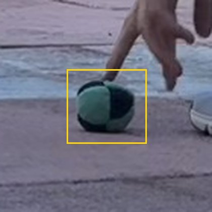
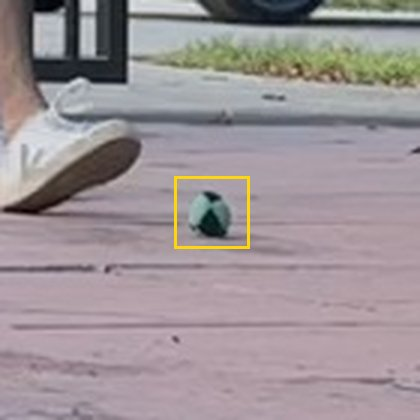
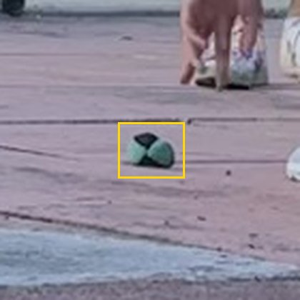
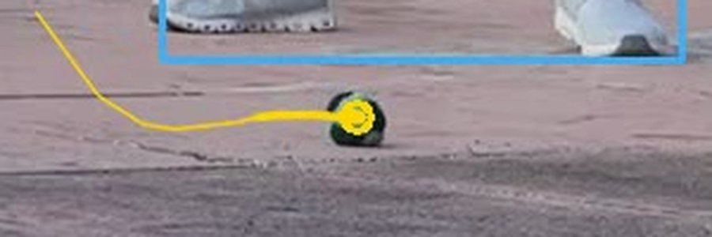
The real cause: a player behind fence bars went undetected for 10+ seconds. You can't re-ID someone you never saw.